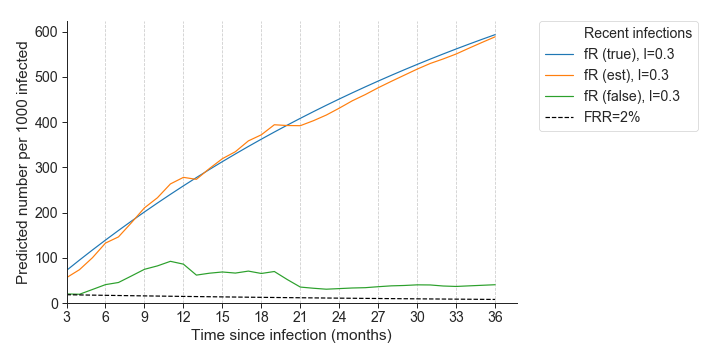
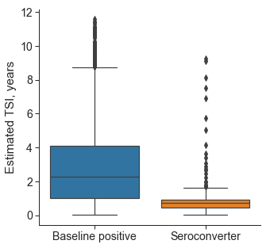
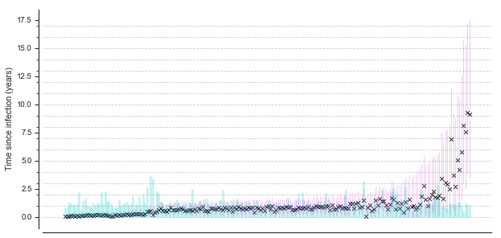

Possible follow-up analyses
30 minutes, really stress meant at population level.
Prevalence of recent infections
one of the principal objectives of HIV-phyloTSI is to estimate incidence, by estimating the proportion of infection that are recent.
Following @freeman_prevalence_1980 and @brookmeyer_estimation_1995, if incidence is constant, it can be estimated as:
\[ I = \frac{\text{# recent}}{\text{# diagnoses} \times MDRI } \]

where \(MDRI\) = mean duration of recency of infection.
- \(MDRI = P[\text{ever being classified as recent}] \times E[ TSI | \text{classified as recent} ]\)
- not a constant: viral suppression, underlying population.
Here we focus on the numerator.
Simulation study:
Blue: true recents Orange: estimated recents Green: false recents: ie estimated recents but chronic bar at 2%
In simulated settings, the prevalence of recent infections is well estimated, despite at least 2% of recent classifications are wrong. 
Application in Zambia
When directly applied to real-world data, HIV-phyloTSI generally produces smaller TSI
for known recent infections as compared to people with unknown first positive date:


=> Can be used to compare median TSIs among population subgroups.
Suggestions on TSI comparison among groups
-> Do not use means, as distribution is skewed (need to square results…)
Comparing simple summary statistics can be misleading:
- need to make sure statistic is reliable
- need to chose summary statistic: median
For reliability:
- make sure groups are large enough (minimum of 40 per group)
- Perform bootstrap to estimate uncertainty around
Suggestions on TSI comparison: bootstrap
read then mention what the equivalent would be for this scenario
Bootstrapping: statistical technique which recycles analysis data to estimate uncertainty around an estimator (e.g. median).
- Synthetic data sets of the same size are obtained by sampling with replacement from the data.
- The estimator is computed on each synthetic data set.
- The distribution of the estimators obtained on the syntetic data sets is summarised through 95% quantiles.
Results on sample dataset:
Small sample sizes, but worth it to illustrate: 1. algorithm, and 2. uncertainty around medians.

How NOT to perform grouping:
explain why: 1. of course, if we chose only individuals with HIV-phyloTSI < 1, there is 0 probability of using … 2. If we have cross-sectional data, the only infections that are estimated to be from 5-10 years ago will be chronic infection. We are not able to observe recent infections from that period, implying we should not compare this different time periods. 3. more of a personal heuristic suggestion,
Groups should be made based on covariates different than HIV-phyloTSI inputs or outputs.
Do NOT:
- Group by estimate of HIV-phyloTSI
- Group by estimated date of infection
- Again: chose groups of sizes < 40
Other analyses on population level outputs:
Estimation of generation time distribution
Enriching source-recipient pairs by providing time since infection.
- Zambia [@hall_demographics_2021]
- Rakai: [@monod_growing_2023]
To account for individual level uncertainty, these studies not only make use of central estimates, but also the output prediction/uncertainty range
Dating infection events in Rakai
Note that although here it seems we are performing analyses at the individual level, the analyses are then performed by age groups and gender by performing some fancy smoothing: we do not need each pair to be 100% sure.
Infection pairs data from Rakai Community Cohort Study
Transmission pairs detected with phyloscanner @ratmann_quantifying_2020
Question: how did transmission pattern change over time?
Need to date infections
Dating infection events in Rakai


Summing up
Unanswered questions: generation intervals
HIV-phyloTSI is a novel algorithm to estimate infection dates.
alternative to serological assays which allows more control on definition of recency (Robust to subtype and ART usage)
preliminary analyses and simulation studies demonstrate good performances at population level
but may be inaccurate at the individual level: very large prediction intervals.
Can help us explore answers to unanswered questions